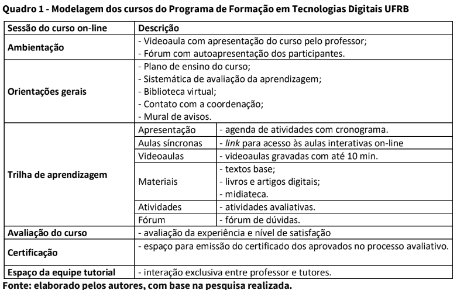
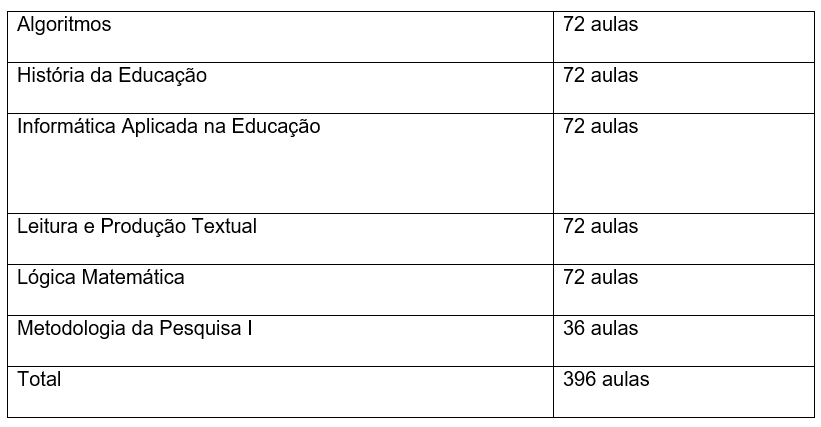

O impacto da pandemia nas decisões acadêmicas
Como já sabemos, a crise mundial causada pela pandemia da corona vírus (COVID – 19), além das muitas perdas, também afetou as instituições de ensino, que acabaram tendo que assumir e cumprir ainda mais o seu papel, de suma importância educacional para a sociedade. Devido as medidas de segurança adotadas mundialmente, o distanciamento social e as paralisações de aulas presenciais foram inevitáveis durante os primeiros anos de pandemia nas instituições, afetando todos os cursos, incluindo os cursos de licenciatura e pedagogia.
Segundo o editorial de abril de 2020 redigido pelo Observatório do ensino médio em Santa Catarina, o assunto teve que ser discutido para que o ensino tivesse uma continuidade independente de ser ou não presencial. Devido à falta de uma política nacional que enfrentasse toda essa situação, os estados acabaram optando por tomar medidas variadas.
Em Santa Catarina, por exemplo, onde foi o foco do observatório citado anteriormente, o investimento escolhido, foi a formação emergencial de professores, onde buscaram aperfeiçoar e adquirir novas habilidades utilizando tecnologias digitais da informação e comunicação, através de um cronograma direcionado a utilização de ferramentas que fazem parte do Google para educação.
É rapidinho, não deixe de assistir!
Adaptação docente
Com essas medidas, adquirir e melhorar habilidades se tornou mais fácil. Utilizar ferramentas desenvolvidas para facilitar o trabalho em equipe e proporcionar uma interação virtual, tornou-se indispensável nesse período de pandemia. Dessa forma, durante esse processo, os docentes em formação, tiveram mais contato com a tecnologia e começaram a utilizar o computador de mesa, Notebook ou Smartphone para criar salas de videoconferência, aprenderam a entrar e sair das salas, interagir, se posicionar perante a câmera, falar ou fazer silêncio, comunicar-se através do chat, fazer apresentações de slides e vídeos, ou seja, realizar todo seu trabalho no ambiente virtual.
Portanto, nesse processo evolutivo, adequar-se ao emprego dessas inovações é uma necessidade básica, e os professores não têm como esquivar-se. Sendo assim, o uso das tecnologias no processo de ensino é no sentido de que estas mobilizam possibilidades de aprendizagem que podem ser ampliadas nos diferentes contextos históricos sociais, teorias defendidas por Nóvoa (1992,p.28).
Falando um pouco do nosso recôncavo baiano, aqui em Santo Amaro/BA, a UFRB, diante do início do semestre letivo, o processo de ensino remoto começou a ser um assunto discutido entre a reitoria e diretoria da universidade, ao que decidiram iniciar uma pesquisa entre os professores, sobre o interesse em participar de capacitação relacionada ao ensino remoto e seu nível de interação com tecnologias digitais. Foram 542 professores que responderam à consulta, sendo que 500 (92,3%) afirmaram seu interesse em participar de formação na área de tecnologias e Ensino Remoto. Ademais, 411 (75,8%) revelaram que tinham pouca ou nenhuma experiência com a utilização de recursos tecnológicos em práticas pedagógicas on-line, enquanto que 116 (21,4%) apontaram que possuíam média experiência (UFRB, 2020). A partir desses resultados, foi desenvolvido um Programa de Formação em Tecnologias Digitais para a comunidade UFRB com coordenação da Superintendência de Educação Aberta e a Distância (SEAD), em articulação com a pró-reitora de Pesquisa, Pós-graduação, Criação e Inovação (POGCI) e a PROGRAD da UFRB.

Formação de docentes em Santo Amaro - BA
Falando um pouco sobre a formação de docentes do IFBA no campus de Santo Amaro - BA, o primeiro semestre de 2022 do curso de Licenciatura em Computação acorreu de forma remota devido á pandemia do covid-19, para o desenvolvimento das aulas os professores disponibilizavam materiais didáticos de forma digital como livros em PDF, artigos, videoaulas entre outros, os alunos acessavam este material através da plataforma Google Classroom onde era possível fazer todo um gerenciamento de notas, trabalhos em grupo e postagens que facilitavam o dia a dia tanto dos alunos como dos professores. Além das atividades realizadas no Google Classroom também aconteciam os encontros virtuais, (aulas síncronas) assim era possível criar um ambiente descontraído e rico em aprendizagem, onde todos podiam compartilhar suas duvidas e interagir sobre as atividades realizadas no ambiente virtual durante a semana.
Componentes curriculares do curso de Licenciatura em Computação:
Referências
SANTO, Eniel. e SANTOS, Adilson. Formação docente em tempos de pandemia da COVID-19: um relato do Recôncavo da Bahia. Local de publicação: Santo Amaro/BA. Em Rede – Revista de Educação a Distância. 2021, v. 8, n. 1
FILHO, Francisco e MENEZES, Eliziete. A formação continuada em tempos de pandemia de Covid-19. Local de publicação: Fortaleza. Ensino em Perspectivas, v. 2, n. 4, p. 1-10, 2021.
VIEIRA, Letícia e RICCI, Maike. A educação em tempos de pandemia: Soluções emergenciais pelo mundo. Local de publicação: Santa Catarina. Observatório do Ensino Médio de Santa Catarina, Editorial de Abril/2020.
NÓVOA, António. Os professores e a sua formação. Lisboa : Dom Quixote, 1992.